Données Manquantes
M2 Stats de la SD, 2024-2025
Introduction
Définition et analyse cas complet
Définition
On dit qu’une donnée est manquante lorsque l’observation d’une variable pour une observation n’est pas accessible
On peut choisir de retirer l’observation associée aux NA mais peu indiqué si :
- petit échantillon (\(n\) faible),
- grande quantité de NA.
On peut aussi retirer les variables associées aux NA si :
- la structure des données le permet (\(p\) important)
- et peu de variables sont atteintes par des NA
Le jeu de données résultant est appelé cas complet, en pratique il n’est jamais conseillé d’utiliser cette approche… Pourquoi ?
Exemple
Soit le jeu de données : \(n=100\) personnes à qui on a demandé de renseigner leur taille et leur poids… plusieurs problèmes peuvent se produire!
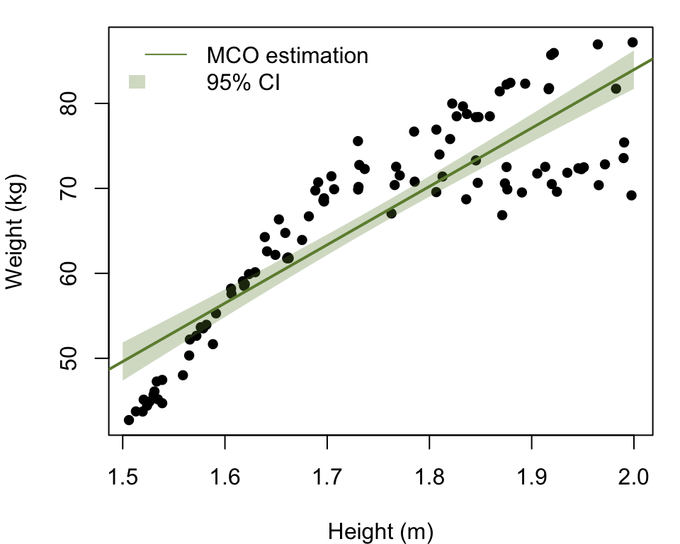… pas plus de 20 pesées…
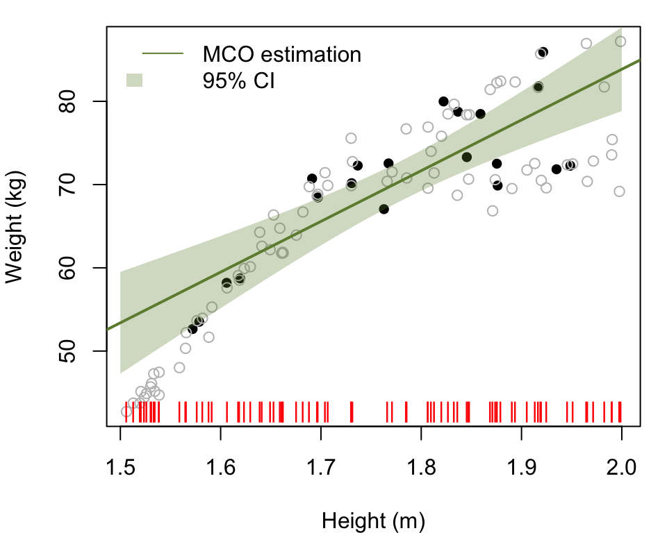… saturation à 70kg…
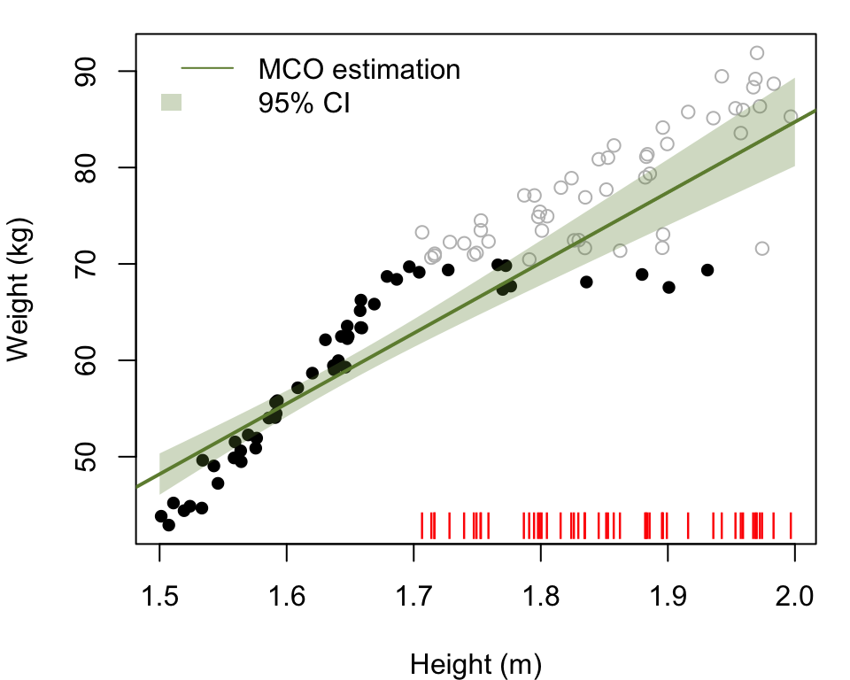… certains ne répondent pas…
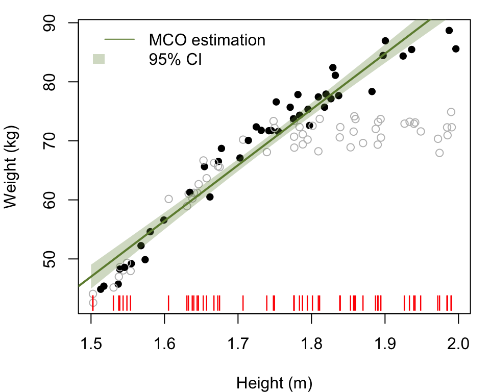Attention, une sous-population semble ne pas répondre…
… il n’y a aucun moyen de voir qu’il y a une structure de données manquantes ici!
En résumé, l’analyse cas complet n’est pas conseillée
- Peut introduire un biais dans l’estimation des paramètres,
- Peut réduire la puissance des tests statistiques en augmentant les écart-types des estimateurs,
- …
Solutions restantes (1)
Il reste de remplir les cases, c’est l’imputation.
- Estimer les NA avec des valeurs fixées (Imputation simple) :
- Conditionnellement à la seule variable considérée :
- moyenne/médiane,
- Last Observation Carried Forward (LOCF),
- Sur l’ensemble des variables :
- k-plus proches voisins (kNN via ),
- forêts aléatoires (missForest (Stekhoven and Buehlmann 2012), itératif),
- PCA (missMDA (Josse and Husson 2016), itératif),
- …
- Conditionnellement à la seule variable considérée :
Solutions restantes (2)
- Imputation multiple :
- Modèles conditionnels (mice (van Buuren and Groothuis-Oudshoorn 2011) )
- PCA (missMDA)
- …
Mécanismes
Une classification des processus de perte de données
Due à Little and Rubin (1976) :
- MCAR (Missing Completely At Random), si la probabilité que la donnée soit manquante ne dépend pas de cette valeur ni des données observées
- MAR (Missing At Random), si la probabilité que la donnée soit manquante ne dépend pas de cette valeur, conditionellement aux données observées
- MNAR (Missing Not At Random), si la probabilité que la donnée soit manquante dépend de cette valeur, conditionellement aux données observées
Exemples
- MCAR Un capteur qui s’éteind et se rallume sans raison. Un patient malade qui se rend à l’hopital seulement lorsqu’il reçoit du courrier.
- MAR Un étudiant ne se rend pas à un examen de rattrapage puisqu’il a réussi l’examen normal.
- MNAR Qui gagne bien sa vie répond moins facilement à toute question sur son salaire.
Autre façon de le dire (1)
On qualifie le mécanisme dee perte de données en fonction de la probabilité de la perte de données conditionnellement aux données observées ou non observées :
- MCAR si la probabilité de manquement est indépendante des données manquantes et observées,
- MAR si la probabilité de manquement est indépendante de la donnée manquante, conditionnellement aux données observées,
- MNAR si la probabilité de manquement n’est pas indépendante de la donnée manquante, conditionnellement aux données observées.
Autre façon de le dire (2)
Si on note \(M\) la matrice indicatrice des données manquantes telle que
\[ m_{i,j} = \left\{ \begin{array}{cl} 1 & \text{si la donnée $x_{i,j}$ est manquante} \\ 0 & \text{sinon} \end{array}\right. \] pour l’individu \(i\) et la variable \(j\).
Avec aussi, \(X^{(o)}\) les données observées et \(X^{(m)}\) les données manquantes, alors
- Si \(\mathbb{P}(M|X^{(o)},X^{(m)}) = \mathbb{P}(M)\), alors c’est un mécanisme MCAR,
- Si \(\mathbb{P}(M|X^{(o)},X^{(m)}) = \mathbb{P}(M|X^{(o)})\), alors c’est un mécanisme MAR,
- Si \(\mathbb{P}(M|X^{(o)},X^{(m)}) \neq \mathbb{P}(M|X^{(o)})\), alors c’est un mécanisme MNAR.
Commentaires
- MCAR Le plus “simple” à gérer, mais peu réaliste
- MAR Peut aussi être géré si approche multivariée
- MNAR On s’en rend compte après coup car rien ne permet de le savoir dans les données
Exemple, l’âge de la population française selon l’Insee (1)
On peut télécharger ces données sur le site de l’Insee1.
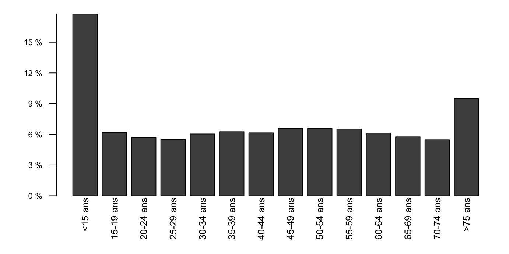
Exemple, l’âge de la population française selon l’Insee (2)
Exercice
Vous créez un jeu de données de taille \(n=\) 1000 formé par deux variables :
- age (variable continue positive) à partir de la distribution de l’Insee,
- a_moins_de_15_ans (1 si oui, 0 sinon) à partir de la variable age
A partir de ce jeu de données, vous allez simuler trois scénarios de données manquantes :
- Sc\(_1\) : “10\(\%\) des gens refusent de donner leur âge.”
- Sc\(_2\) : “Un bug informatique a supprimé les âges des moins de 15 ans.”
- Sc\(_3\) : “C’est vendredi, les étudiants ne sont pas là!”
Vous discuterez des hypothèses prises et des résultats obtenus.
Sc\(_1\) : “10\(\%\) des gens refusent de donner leur âge.”
10\(\%\) des observations sont à retirer du jeu de données
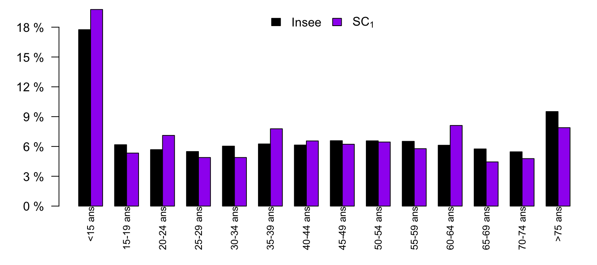Sc\(_2\) : “Suppression des âges des moins de 15 ans.”
Les individus de classe 1 sont à retirer du jeu de données (hyp 1)
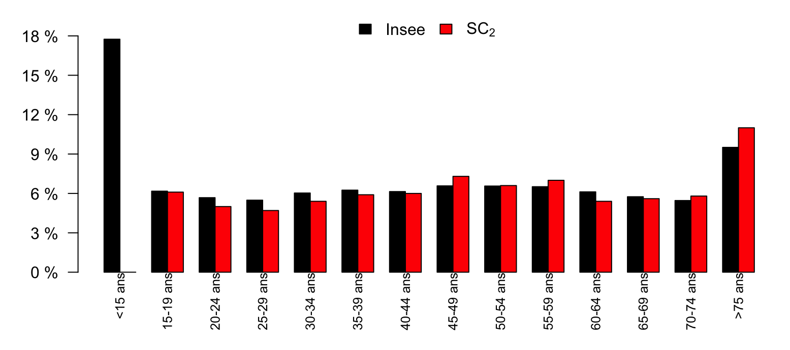Sc\(_3\) : “C’est vendredi, les étudiants ne sont pas là!”
La moitié des individus de classe 3 est à retirer du jeu de données (hyp 2)
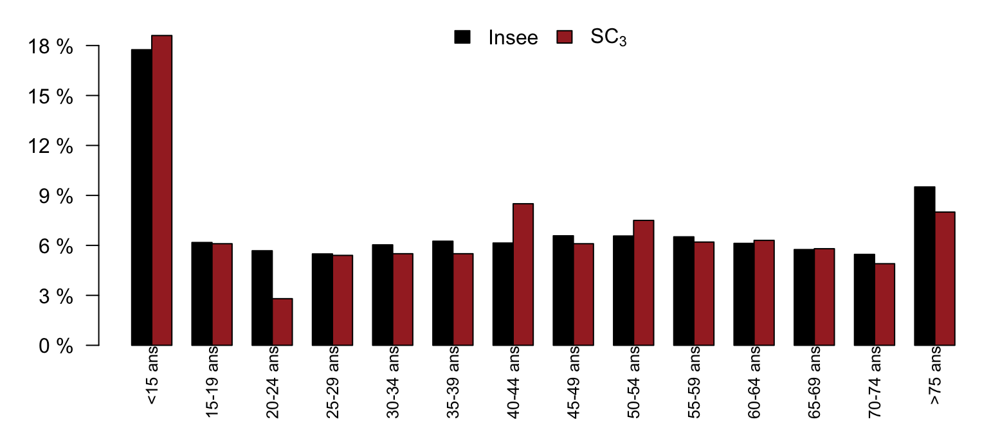Exemple, l’âge de la population française selon l’Insee, commentaires
Sc\(_1\) : On reconnaît l’hypothèse MCAR
Sc\(_2\) peut être géré conditionellement à la variable indicatrice : MAR
Sc\(_3\) est plus difficile à gérer : MNAR
Une solution pour le cas MNAR ?
Rechercher des informations supplémentaires via une autre variable par exemple ou un autre essai similaire ou l’expérience d’un expert
Régression et imputation
Modèle linéaire simple à une covariable
On considère le modèle suivant :
\[ \left[y|x,\alpha,\beta,\sigma^2\right] ~\sim \mathcal{N}(\alpha + \beta x,\sigma^2), \] où \(x\) est la covariable, \(\alpha\) l’ordonnée à l’origine, \(\beta\) la pente et \(\sigma^2\) la variance du bruit additif. C’est le modèle linéaire très classique.
Ici \(\theta=(\alpha,\beta,\sigma^2)\) et des données manquantes apparaîssent dans \(y\).
La problématique ressemble à un problème d’estimation de paramètres dans un modèle linéaire simple, mais avec des données manquantes.
Simulation des données
Soit le modèle de simulation
\[ y = x + \epsilon \] où \(x \sim \mathcal{N}(0,1)\), \(\epsilon \sim \mathcal{N}(0,1/4)\) et \(\epsilon \perp \!\!\! \perp x\). Donc \(\alpha=0\), \(\beta=1\) et \(\sigma^2=1/4\). On a accès à :
- un échantillon d’entraînement \(S=(x_i,y_i)_{i=1,\dots, n}\) de taille \(n=\) 50,
- un échantillon de test \(\tilde{S}=(x_i)_{i=n+1,\dots,n+\tilde{n}}\) de taille \(\tilde{n}=\) 30.
En régression, on réalise deux opérations successives :
- construction d’un modèle de régression sur \(S\), noté \(\mathcal{P}\),
- estimation de la réponse de \(\mathcal{P}\) à une covariable \(x_0\), notée \(\hat{y_0}=\mathcal{P}(x_0)\).
Lien avec les données manquantes
En combinant \(S\) et \(\tilde{S}\), on a accès à un jeu de données de dimensions \((n+\tilde{n})\times(2)\) avec \(\tilde{n}\) données manquantes : les valeurs \((y_i)_{i=n+1,\dots,n+\tilde{n}}\).
On peut observer la structure des données manquantes grâce aux commandes suivantes
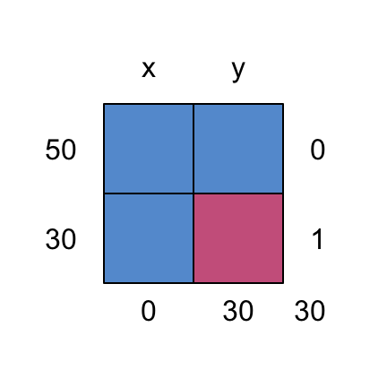Analyse du jeu de données simulées
Comparaison de 2 méthodologies d’imputation :
- à la moyenne,
- en utilisant le modèle de régression linéaire.
Dans chaque cas on observera attentivement le comportement des distributions après imputations.
Après imputation d’une observation
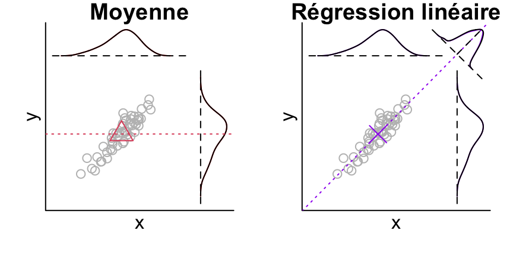Après imputation de 5 observations
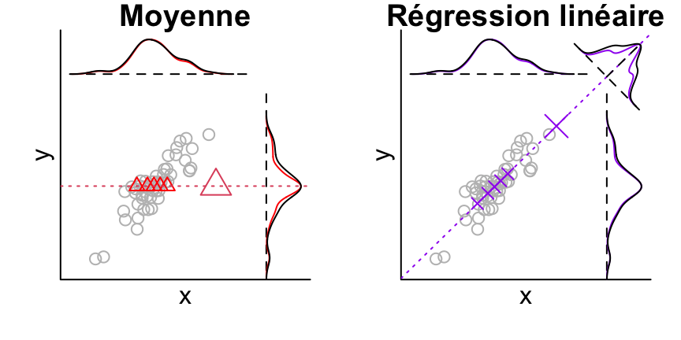Après imputation de 30 observations
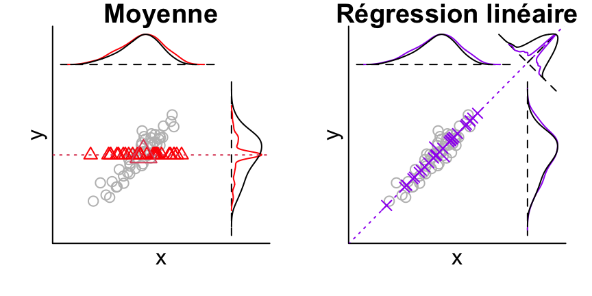Au total
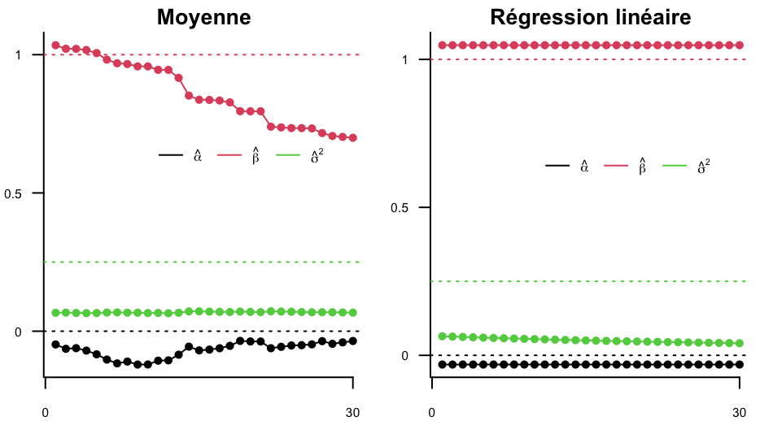Observations
Deux impératifs apparaissent :
- Conditionner l’estimation des données manquantes sur les données observées.
- Utiliser un modèle de régression adapté.
- Garder en tête que l’ensemble reconstruit doit être réutilisé : c’est la grosse différence avec la régression/classification/analyse classique.
Une solution ?
- Pourquoi ne pas faire de la régularisation ?
\[ \text{Régularisation Ridge : }\ \min_{\alpha, \beta} \ (y-\alpha-x \beta)^2+\lambda \beta^2 \]
La régularisation (1)
- Régression linéaire pénalisée Ridge pour l’imputation.
- Régression linéaire pour l’estimation des paramètres.
\(\longrightarrow\) Compromis biais-variance.
La régularisation (2)
Conclusion
La régularisation permet de réduire l’erreur que l’on fait sur l’estimation de \(\sigma^2\) au détriment de la variance estimée de \(y\)
La prédiction, qui est une espérance conditionelle, ne prend pas en compte l’incertitude liée au modèle (bruit d’observation,…)
Une solution ?
Il faut utiliser une méthode qui introduise cette incertitude
Générer M jeux de données imputés pour obtenir cette variabilité
C’est la régression stochastique
La régression stochastique - improper imputation
Alors que le modèle de prédiction était précédemment
\[ \hat{y} = \hat{\alpha} + \hat{\beta} x, \] où \(\hat{\beta}\) était estimé sur le jeu de données \(S\), nous allons maintenant utiliser l’estimateur
\[ \tilde{y} = \hat{\alpha} + \hat{\beta} x + \eta, \] avec \(\eta\sim \mathcal{N}(0,\hat{\sigma}^2)\) et \(\hat{\sigma}^2\) est estimé sur \(S\) via
\[ \hat{\sigma}^2 = \frac{1}{n}\sum_{i=1}^{n}(y_i-\hat{y}_i)^2. \]
La régression stochastique - improper imputation (2)
On répète un nombre \(M=\) 20 d’imputations du jeu de données intitiales. En voici 3 versions.
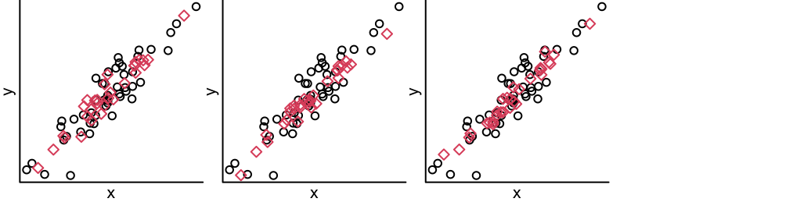La moyenne empirique des \(M=\) 20 estimations pour chacun des 3 coefficients: \[ \hat{\alpha}_N\approx -0.031\pm 0.054, \ \hat{\beta}_N\approx 0.984\pm 0.052,\ \hat{\sigma}^2_N\approx 0.22 \]
Le boxplot, toujours aussi utile
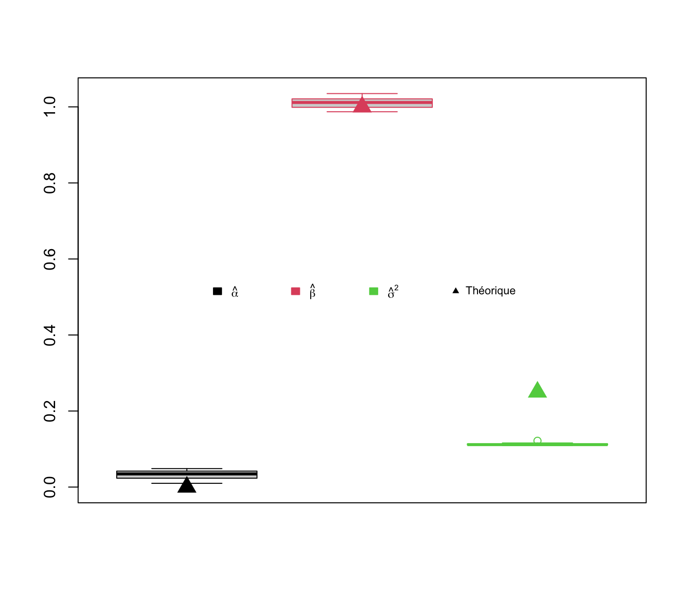Les points théoriques sont en dehors des distributions… A-t-on oublié quelque chose ?
L’imputation multiple - proper (1)
Problème
Cette solution ne prend pas en compte la variabilité sur les paramètres.
Deux solutions
- Bayes : Tirer \(M\) paramètres sur la distribution a posteriori (si définie…). Estimer \(M\) jeux de données différents en suivant ces paramètres Tanner and Wong (1987), utilisée dans MICE van Buuren and Groothuis-Oudshoorn (2011)
- Bootstrapper \((S,\tilde{S})\) pour créer \(M\) jeux de données dans lesquels il y a potentiellement des données manquantes, approche de missMDA Josse and Husson (2016).
Ensuite appliquer la méthode d’analyse sur chacun des jeux de données séparément.
Estimer les paramètres par aggrégation des \(M\) modèles.
L’imputation multiple - proper (2)
On obtient des estimations :
Via bootstrap : \[ \hat{\alpha}_\text{Boot}\approx -0.017\pm 0.058, \ \hat{\beta}_\text{Boot}\approx 0.992\pm 0.056, \ \hat{\sigma}^2_\text{Boot}\approx 0.249 \]
Via la postérieure/bayésienne : \[ \hat{\alpha}_\text{Bayes}\approx -0.038\pm 0.064, \ \hat{\beta}_\text{Bayes}\approx 0.982\pm 0.061,\ \hat{\sigma}^2_\text{Bayes}\approx 0.312 \]
Pour rappel, dans les cas impropres : \[ \begin{array}{lccc} \text{Moyenne}&\hat{\alpha}_0\approx -0.227\pm 0.077 & \hat{\beta}_0\approx 0.545\pm 0.073 & \hat{\sigma}^2_0\approx 0.449\\ \text{Régression linéaire}&\hat{\alpha}_l\approx -0.031\pm 0.05 & \hat{\beta}_l\approx 0.981\pm 0.048 & \hat{\sigma}^2_l\approx 0.192\\ \text{Régression stochastique}&\hat{\alpha}_N\approx -0.031\pm 0.054 & \hat{\beta}_N\approx 0.984\pm 0.052 & \hat{\sigma}^2_N\approx 0.22 \end{array} \]
Règle de Rubin (Rubin’s Rule)
Soit \(M\) jeux de données imputés alors la règle de Rubin stipule que \[ \hat{\theta}_{IM} = \frac{1}{M}\sum_{m=1}^M \hat{\theta}_m, \] où \(\hat{\theta}_m\) est la valeur du paramètre estimé pour le jeu de donné d’indice \(m\). Il vient alors : \[ \begin{array}{lcl} \hat{\sigma}^2_{IM} = \hat{\sigma}^2_{W} + (1+\frac{1}{M})\hat{\sigma}^2_{B},\\ \text{variance imputée : }\hat{\sigma}^2_{W} = \frac{1}{M}\sum_{m=1}^M \hat{\sigma}_m^2,\\ \text{variance inter-imputation : }\hat{\sigma}^2_{B} = \frac{1}{M-1}\sum_{m=1}^M (\hat{\theta}_m-\hat{\theta}_{IM})^2. \end{array} \] Sachant que les variances par modèle sont estimées via \[ \begin{array}{lcl} \hat{\sigma}_m^2(\hat{\alpha})&=& \hat{\sigma}^2(\frac{1}{n+\tilde{n}}+\frac{\bar{x}^2}{\sum_{i=1}^{n+\tilde{n}}(x_i-\bar{x})^2})\\ \hat{\sigma}_m^2(\hat{\beta})&=& \hat{\sigma}^2\frac{1}{\sum_{i=1}^{n+\tilde{n}}(x_i-\bar{x})^2} \end{array} \]
Justifications théoriques
Structure du cours
Dans la suite on considère le cas général d’un modèle paramètrique de paramètre \(\theta\in\Theta\)
Estimation d’un paramètre optimal
Justification de la méthode du maximum de vraisemblance dans le cas de jeux de données avec données manquantes
Simulation de données et de paramètres
Comment simuler, conditionellement aux données observées \(X\) :
- des données manquantes \(Z\)
- des paramètres \(\theta\)
en présence de données manquantes
Estimation de paramètre – algorithme EM
Maximization de vraisemblance
Soit une fonction de densité paramétrique \(p(x|\theta)\) qui dépend du paramètre \(\theta\in\Theta\), \(\Theta\) potentiellement multi-dimensionnel.
Dans le cas d’un échantillon de \(n\) observations indépendantes \(X=(x_1,\dots,x_n)\) la vraisemblance s’écrit : \[ \mathcal{L}(\theta|X) = \prod_{i=1}^np(x_i|\theta). \] Plus cette valeur est importante et plus le modèle \(\theta\) est vraisemblable suivant les données \(X\). La contrainte de cette fonction est qu’elle doit sommer à 1.
Maximization de vraisemblance (2)
Le meilleur paramètre pour nos données \(X\) sera donc celui qui maximise cette vraisemblance.
\[ \max_{\theta\in\Theta}\ \mathcal{L}(\theta|X). \]
Dans le cas d’absence de données manquantes, la solution est l’estimateur du maximum de vraisemblance.
Le problème se pose lorsque des données manquent dans \(X\)…
Remarque
Important
L’algorithme EM est une méthode itérative qui permet de maximiser la vraisemblance.
C’est un algorithme d’optimisation, une méthode numérique.
Il est utilisé dans le cadre de la gestion de données manquantes car il permet :
- d’estimer des données manquantes,
- d’estimer les paramètres statistiques du modèle considéré,
- d’offir une garantie de maximalité de la vraisemblance.
L’algorithme EM n’est pas toujours utilisé pour gérer des données manquantes!
Idée de l’algorithme EM
EM (pour Expectation-Maximization) permet d’estimer des paramètres \(\theta\) dans un modèle à vraisemblance, mais aussi les données manquantes.
C’est un algorithme itératif à deux étapes. On part d’une initialisation et pour une itération \(k>0\), il vient :
- Espérance : approximer les données manquantes en fonction du paramètre courant \(\theta_{k}\). Ceci permet de compléter le jeu de données.
- Maximisation : approximer le modèle en fonction du jeu de donnée complété à l’étape précédente.
Naissance de l’algorithme EM (1)
Soit \(X\in\mathcal{X}\) les données manquantes et \(Z\in\mathcal{Z}\) les données présentes, alors la fonction de densité jointe de \((X,Z)\) peut s’écrire \[ p\left(X,Z|\theta\right)=p\left(X|Z,\theta\right)p\left(Z|\theta\right). \] Ainsi, par intégration sur \(\mathcal{Z}\) l’ensemble formé par les évènements possibles pour les données manquantes il vient \[ p\left(X|\theta\right) = \int_{z\in \mathcal{Z}}p\left(X,z|\theta\right)dz=\int_{z\in \mathcal{Z}} p\left(X|z,\theta\right)p\left(z|\theta\right)dz \] L’objectif de l’algorithme est de maximiser la log vraisemblance \(\ell(\theta|X)\) : \[ \ell(\theta|X)=\ln\left(p(X|\theta)\right). \]
Naissance de l’algorithme EM (2)
Si l’on choisit \(z\mapsto q(z)\) est une densité de probabilité sur \(\mathcal{Z}\) qui est nulle seulement là où \(z\mapsto p\left(X,z|\theta\right)\) est aussi nulle, alors :
\[ \begin{align*} \ell(\theta|X) & = \int_{\mathcal{Z}} q(z) \ell(\theta|X) dz = \int_{\mathcal{Z}} q(z) \ln \left( \frac{p(X|\theta) p(z | X,\theta)}{p(z | X,\theta)} \right) dz, \\ & = \int_{\mathcal{Z}} q(z) \ln \left( \frac{p(X, z| \theta)}{p(z | X,\theta)} \right) dz = \int_{\mathcal{Z}} q(z) \ln \left( \frac{p(X, z| \theta) q(z)}{p(z | X,\theta) q(z)} \right) dz, \\ & = \int_{\mathcal{Z}} q(z) \ln \left( \frac{p(X, z| \theta)}{q(z)} \right) dz + \int_{\mathcal{Z}} q(z) \ln \left( \frac{q(z)}{p(z | X,\theta)} \right) dz, \\ & = F(q, \theta) + KL\left\{q || p(\cdot|X,\theta)\right\}. \end{align*} \]
On apelle divergence de Kullblack-Leibler : \((p,q)\mapsto D_{KL}\left\{p||q\right\}=\int_{\mathcal{Z}} p\log\left({p}/{q}\right)\) et on peut montrer que cette divergence est positive ou nulle. Nulle si et seulement si \(p=q\).
Naissance de l’algorithme EM (3)
Il vient que la fonctionelle \((q,\theta)\mapsto F(q,\theta)\) agit comme un minorant de la log-vraisemblance, on l’apelle souvant Evidence Lower Bound (ELBO) et ainsi :
\[ \ell(\theta|X)\geq F(q,\theta). \]
L’objectif de l’EM est de maximiser cette fonctionnelle qui va ainsi assurer à la log-vraisemblance d’être maximale.
Pour celà, il faut particulariser la densité \(q\).
L’algorithme EM (1)
Si l’on connaît la forme de la loi conditionelle de \(z\) sachant un paramètre \(\theta_0\in\Theta\) et nos données \(X\), on peut écrire \(q(z)=p(z|X,\theta_0)\) et il vient :
\[ \begin{array}{c c l} F(q, \theta) & = & \int_{\mathcal{Z}} q(z) \ln \left( \frac{p(X, z| \theta)}{q(z)} \right) dz,\\ &=& \int_{\mathcal{Z}} p(z|X,\theta_0) \ln \left( \frac{p(X, z| \theta)}{p(z|X,\theta_0)} \right) dz,\\ &=& \int_{\mathcal{Z}} p(z|X,\theta_0) \ln \left( p(X, z| \theta) \right) dz-\int_{\mathcal{Z}} p(z|X,\theta_0) \ln \left( p(z|X,\theta_0) \right) dz,\\ &=& Q(\theta|\theta_0,X)+cste(\theta_0,q),\\ &=& \mathbb{E}_{\theta_0}\left[\ln{p\left(X,Z|\theta\right) }\right]+cste(\theta_0,q). \end{array} \]
Il vient l’objectif, finalement, de maximiser \(Q(\theta|\theta_0,X)\), qui est
l’espérance conditionelel de la vraisemblance complétée.
L’algorithme EM (2)
L’algorithme EM construit une suite de paramètres \(\left(\theta_k\right)_{k\geq0}\) tels que \(\forall k>0\) : \[ \theta_{k+1} = \text{arg max}_{\theta\in\Theta}\ Q(\theta|\theta_{k},X). \]
Ces éléments vérifient \(\ell(\theta_{k+1}|X) \geq \ell(\theta_{k}|X) \geq\ldots\geq \ell(\theta_{0}|X)\). La suite \(\left(\ell(\theta_{k}|X)\right)_{k\geq0}\) est donc croissante. Cette suite est aussi majorée par le maximum de la function maximisée. Cette suite converge donc.
Dans les faits, cette convergence est lente et se fait souvent vers un maximum local, ce qui nécessite plusieurs initialisations.
Algorithme EM et espérance conditionelle (2)
\[ \begin{array}{c c l} Q\left(\theta|\theta_0,X\right) &=& \mathbb{E}_{\theta_0}\left[\ln{p\left(X,Z|\theta\right) }\right]. \end{array} \] La log-vraisemblance complétée, \(\ln{p\left(X,z|\theta\right)}\), est souvent notée \(\ell_c(X,z|\theta)\). Complétée car les données manquantes, \(z\), sont ajoutées, ce qui permet d’avoir accès à un jeu de données complet \(\left(z,X\right)\).
Noter, dans un coin de sa tête, que l’espérance conditionelle de la log-vraisemblance complétée est souvent plus simple à calculer que la vraisemblance complète. C’est tout l’intérêt de l’algorithme EM. Si ce n’est pas le cas ? Voir bien plus loin…
Algorithme EM
Soit pour l’itération \(k\) en ayant initialisé \(\theta_{k}\). On répète les deux étapes suivantes jusqu’à convergence :
- Etape E : Espérance conditionelle : Evaluation de \(Q\left(\theta|\theta_{k},X\right)\).
- Etape M : Maximisation : de \(Q\left(\theta|\theta_{k},X\right)\) pour obtenir \(\theta_{k+1}\).
Remarque importante
Dans certains cas, le calcul de l’espérance conditionelle revient au calcul des espérances conditionelles des variables latentes \(z_i\).
Important
On voit souvent la notation \[\mathbb{E}_{\theta_{k}}[Z_i] = <\!\!z_i\!\!>_k.\]
Un petit exemple (1)
On accède aux données d’un capteur de température qui sature à partir d’une température \(a\). On sait que la température suit une loi normale de moyenne \(\theta\) et de variance \(1\). Parmi les \(n=n_1+n_2\) données, les \(n_1\) premières ne sont pas saturées (\(x_i<a\)) alors que les \(n_2\) suivantes sont saturées (\(x_i\geq a\)). On cherche tout de même à estimer \(\theta\), la vraie valeur de la température.
Dans ce cas, la vraisemblance du problème s’écrit \[ \mathcal{L}(\theta|X) = \left(1-\Phi(a-\theta)\right)^{n_2}\prod_{i=1}^{n_1}\varphi(x_i-\theta), \] où \(\varphi\) et \(\Phi\) sont les fonctions de densité et de répartition de la loi normale centrée réduite.
Un petit exemple (2)
On introduit des variables latentes \(z_i\) et on écrit alors la vraisemblance complétée \[ \mathcal{L}_c(\theta|X,Z) = \prod_{i=1}^{n_1}\varphi(x_i-\theta)\prod_{i=1}^{n_2}\varphi(z_i-\theta), \] qui est cette fois simple à régler puisque les \(z_i\) sont observés.
C’est l’étape de maximization qui permet de trouver le paramètre \(\theta\) optimal.
Un petit exemple (3)
On peut aisemment détailler la vraisemblance complétée \(\ell_c(\theta|X,Z)\) :
\[ \ell_c(\theta|X,Z) = -\frac{1}{2}\sum_{i=1}^{n_1} (x_i-\theta)^2 -\frac{1}{2} \sum_{i=1}^{n_2}(z_i-\theta)^2 + cste. \]
L’espérance conditionelle de la log-vraisemblance complétée est alors
\[ Q(\theta|\theta_k,X) = \mathbb{E}_{\theta_k}\left[\ell_c(\theta|X,Z)\right] = -\frac{1}{2}\sum_{i=1}^{n_1} (x_i-\theta)^2 -\frac{1}{2} \sum_{i=1}^{n_2}\mathbb{E}_{\theta_k}[(Z_i-\theta)^2] + cste. \]
Un petit exemple (4)
La fonctionelle \(Q(\theta|\theta_k,X)\) est alors maximale en \[ \theta_{k+1} = \frac{\sum_{i=1}^{n_1}x_i+\sum_{i=1}^{n_2}<\!\!z_i\!\!>_k}{n} \]
et le terme en \(n_2\) a tendance à tirer la moyenne vers lui. Pour ce qui est de \(<\!\!z_i\!\!>_k\) : \[ <\!\!z_i\!\!>_k=\mathbb{E}_{\theta_k}[Z_i]=\dfrac{\int_{a}^{\infty}z\varphi(z-\theta_k)dz}{1-\Phi(a-\theta_k)} = \theta_k + \dfrac{\varphi(a-\theta_k)}{1-\Phi(a-\theta_k)}. \]
Un petit exemple (5)
L’algorithme EM recherché réalise donc les deux étapes suivantes, après initialisation de \(\theta\) via \(\theta_0\), et pour toute itération \(k>0\) :
- Espérance : Calcul de \(Q(\theta|\theta_k,X)\), celà revient ici à calculer:
\[\forall i\in\{1,\dots,n_2\},\quad <\!\!z_i\!\!>_k = \theta_k + \dfrac{\varphi(a-\theta_k)}{1-\Phi(a-\theta_k)}=<\!\!z_1\!\!>_k.\]
- Maximisation : on calcule \(\theta_{k+1} = \dfrac{\sum_{i=1}^{n_1}x_i+n_2<\!\!z_1\!\!>_k}{n}\).
Un petit exemple (6)
Application numérique avec \(\theta=30\), \(n_1=400\), \(n_2=250\) et \(a=30.27\) :
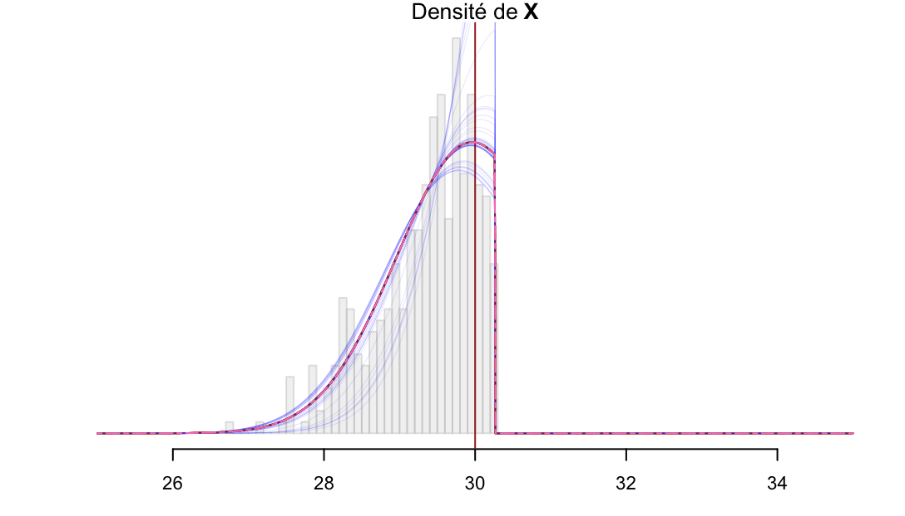Algorithme EM, retour à notre exemple
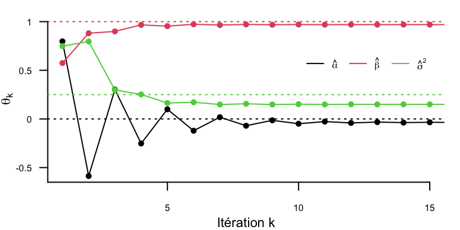Les valeurs estimées sont alors \[ \hat{\alpha}_\text{EM}\approx -0.036\pm 0.043, \ \hat{\beta}_\text{EM}\approx 0.969\pm 0.043,\ \hat{\sigma}^2_\text{EM}\approx 0.15 \]
Monte-Carlo EM
Raison d’être
On utilise l’algorithm EM car la fonctionelle \(Q(\cdot|\theta_0,X)\) est, nous l’espérons, simple à écrire.
Que faire si ce n’est pas le cas ?
Monte-Carlo EM (MCEM, Wei and Tanner (1990))
On remplace \(Q(\cdot|\theta_k,X)\) par une approximation Monte-Carlo. L’étape E devient :
\[\begin{align} Z_{k,t}&\sim p(Z|X,\theta_k),\\ \widehat{Q}_T(\theta|\theta_k,X) &= \frac{1}{T}\sum_{t=1}^T \ell_c(X,Z_{k,t}|\theta), \end{align}\] et alors \(\widehat{Q}_T(\cdot|\theta_k,X)\ \underset{T\to\infty}{\longrightarrow}\ Q(\cdot|\theta_k,X)\) par application de la loi des grands nombres.
Esprit de MCEM
- Initialisation : On initialise \(\theta_0\) et on fixe \(T\) le nombre de simulations
- Etape E : Calcul de \(\widehat{Q}_T(\cdot|\theta_k,X)\)
- Etape M : On met à jour le paramètre \(\theta\) qui maximise \(\widehat{Q}_T(\cdot|\theta_k,X)\)
- On répète les deux étapes précédentes jusqu’à convergence
Remarque
Important
La suite ainsi construite des vraisemblances n’est pas assurée d’être monotone
Exemple des cellules (1), voir Dempster, Laird, and Rubin (1977)
Soit un échantillon biologique peuplé de 4 types cellulaires différents, \(X=(x_1,x_2,x_3,x_4)\), le nombre de chaque type cellulaire dans l’échantillon biologique. On considère le modèle multinomiale suivant :
\[ (x_1,x_2,x_3,x_4) ~\sim ~\mathcal{M}\left(n;\dfrac{2+\theta}{4},\dfrac{1-\theta}{4},\dfrac{1-\theta}{4},\dfrac{\theta}{4},\right), \] et le paramètre inconnu est \(\theta\in[0,1]\). La vraisemblance de l’échantillon, de taille 1, s’écrit \[ \mathcal{L}(\theta|X) = (2+\theta)^{x_1}(1-\theta)^{x_2+x_3}\theta^{x_4}, \] qui n’est pas forcemment simple à maximiser.
Exemple des cellules (2)
On introduit deux variables latentes \(z_1\) et \(z_2\) telles que \(x_1=z_1+z_2\). \(z_2\) suit une loi binomiale de paramètre \(\left(x_1,\dfrac{\theta}{\theta+2}\right)\). La log-vraisemblance complétée s’écrit alors
\[ \ell_c(\theta|X,z_2) = (x_2+x_3)\log(1-\theta) + (z_2+x_4)\log(\theta), \]
et là on sait gérer :) car l’espérance conditionelle sur \(\theta_k\) s’écrit : \[ Q(\theta|\theta_k,X) = (x_2+x_3)\log(1-\theta) + (<\!\!z_2\!\!>_k+x_4)\log(\theta), \] avec \(<\!\!z_2\!\!>_k= \dfrac{\theta_k}{2+\theta_k}x_1\), ça c’est l’EM classique avec : \[ \widehat{\theta}_{k+1} = \dfrac{<\!\!z_2\!\!>_k+x_4}{<\!\!z_2\!\!>_k+x_4 + x_2+x_3} \]
Exemple des cellules (3)
En MCEM, on simule \(T\) valeurs pour \(z_2~\sim\mathcal{B}\text{inom}(x_1,\dfrac{\theta_k}{2+\theta_k})\), notées \(\left(z_{2,k,t}\right)_t\) et on construit la statistique d’intérêt :
\[ \widehat{Q}_T(\theta|\theta_k,X) = \dfrac{1}{T}\sum_{t=1}^T \ell_c(\theta|X,z_{2,k,t}) = (x_2+x_3)\log(1-\theta)+ \left(\dfrac{1}{T}\sum_{t=1}^Tz_{2,t}+x_4\right)\log(\theta). \] Ainsi, en notant \(\widehat{<\!\!z_2\!\!>_k} = \dfrac{1}{T}\sum_{t=1}^Tz_{2,k,t}\), la valeur mise à jour de \(\theta\) devient \[ \check{\theta}_{k+1} = \dfrac{\widehat{<\!\!z_2\!\!>_k}+x_4}{\widehat{<\!\!z_2\!\!>_k}+x_4 + x_2+x_3} \]
Exemple des cellules (4)
\[ (x_1,x_2,x_3,x_4) = (115,35,40,10)\quad \text{et} \quad \theta=0.3 \]
Remarque Ridge
Remarque sur l’exemple
Dans cet exemple, il est inutile d’avoir recours au MCEM, mais ce n’est pas toujours le cas
Remarque générale
Si \(T=1\) on parle de stochastic EM (SEM)
Modèle logit à effet aléatoire (1)
On considère le modèle logit à effet aléatoire suivant (voir Booth and Hobert 1999) :
\[\begin{align} [Y_{i,j}|x_{i,j},z_i,\beta] & \sim\mathcal{B}\text{ernoulli}\left(\dfrac{\exp(\beta x_{i,j}+z_i)}{1+\exp(\beta x_{i,j}+z_i)}\right),\\ Z_i&\sim\mathcal{N}(0,\sigma^2), \end{align}\] où \(Z_i\) est l’effet aléatoire de l’individu \(i\) et la modalité \(j\) allant de 1 à \(m\). On écrit la vraisemblance complétée de ce modèle \[ \mathcal{L}_c(\beta,\sigma^2|X,Y,Z) = \dfrac{1}{\sqrt{\sigma^2}^n} \text{e}^{-\sum_i\frac{z_i^2}{2\sigma^2}} \prod_{i,j}\dfrac{\exp(y_{i,j}(\beta x_{i,j}+z_i))}{1+\exp(\beta x_{i,j}+z_i)}. \] et son pendant logarithmique est alors : \[ \begin{array}{c c c} \ell_c(\beta,\sigma^2|X,Y,Z) &=& -n\log \sigma - \dfrac{\sum_{i}z_i^2}{2\sigma^2}+\sum_{i,j}y_{i,j}(\beta x_{i,j}+z_i)\\ &&- \sum_{i,j}\log(1+\exp(\beta x_{i,j}+z_i)). \end{array} \]
Modèle logit à effet aléatoire (2)
L’espérance conditionelle de son logarithme, pour un paramètre \(\theta_0=(\beta_0,\sigma_0^2)\) :
\[ \begin{array}{c c c} Q(\theta|\theta_0,X,Y) &=& -n\log \sigma - \dfrac{\sum_{i}\mathbb{E}_{\theta_0}[Z_i^2]}{2\sigma^2}+\sum_{i,j}y_{i,j}(\beta x_{i,j}+\mathbb{E}_{\theta_0}[Z_i])\\ &&- \sum_{i,j}\mathbb{E}_{\theta_0}[\log(1+\exp(\beta x_{i,j}+Z_i))]. \end{array} \]
La maximisation en \(\sigma\) est possible : \[ \tilde{\sigma}^2 = \dfrac{1}{n}\sum_{i}\mathbb{E}_{\theta_0}[Z_i^2], \] mais la maximisation en \(\beta\) est plus complexe…
Modèle logit à effet aléatoire (3)
D’après la forme de la vraisemblance complétée, on peut déduire la forme de la loi conditionelle des \(Z_i\) : \[ [Z_i|(x_{i,j},y_{i,j})_j,\beta,\sigma^2] \propto \frac{\text{e}^{-\dfrac{\left(Z_i-\sigma^2\sum_{j} y_{i,j}\right)^2}{2\sigma^2}}}{\prod_{j} \left(1+\exp\left(\beta x_{i,j}+Z_i\right)\right)}. \]
En oubliant le dénominateur on pourrait croire que \[ [Z_i|(x_{i,j},y_{i,j})_j,\beta,\sigma^2]\sim\mathcal{N}(\sigma^2\sum_{j} y_{i,j},\sigma^2), \] mais ce n’est pas le cas…
Il est nécessaire d’avoir recours à des méthodes d’échantillonnage de type MCMC.
Modèle logit à effet aléatoire (4)
Simulation des \(Z_i\) : algorithme d’acceptation rejet
On va utiliser un algorithm d’acceptation-rejet pour simuler chacun des \(Z_i\), indépendemment. A l’instant \(t\), on utilise la loi instrumentale \(\mathcal{N}(z_{i,t-1},\sigma^2)\) pour simuler un candidat \(\check{z}_{i}\). On calcule le taux d’acceptation \[ \alpha_i= \dfrac {p(\check{z}_{i}|(x_{i,j},y_{i,j})_j,\beta,\sigma^2)} {p(z_{i,t-1}|(x_{i,j},y_{i,j})_j,\beta,\sigma^2)}. \] On tire alors un \(U\) uniformemment sur \([0,1]\) : \(z_{i,t}\gets \check{z}_{i}\) si \(U\leq\alpha_i\) et \(z_{i,t}\gets z_{i,t-1}\) sinon.
Il vient alors l’étape M de MCEM : \[ \begin{array}{ccl} \hat{\sigma}^2 &=& \dfrac{1}{nT}\sum_{i,t}z_{i,t}^2,\\ \hat{\beta} &=& \text{arg}\underset{\beta}{\max} \underset{i,j,t}{\sum}y_{i,j}(\beta x_{i,j}+z_{i,t})-\log(1+\exp(\beta x_{i,j}+z_{i,t})). \end{array} \]
Modèle logit à effet aléatoire (5)
Il ne reste plus qu’à implémenter, exercice laissé au lecteur
Conclusion sur MCEM
- Avantages : permet de contourner des problèmes de calculs de vraisemblances conditionelles complexes
- Inconvénients :
- nécessité de simuler des données, ce qui peut être coûteux en temps de calcul
- nécessité d’un critère de convergence adapté
- pas de prise en compte de la variabilité associée au mécnaisme de données manquantes
VBEM : plus loin avec l’EM (1)
La méthode Variational Bayes EM (VBEM) est une extension de l’EM qui permet de contourner les problèmes de calculs de vraisemblances conditionelles complexes en supposant que la distribution postérieure des données est formée par le produit d’une densité en \(Z\), les données manquantes, et d’une densité en \(\theta\), le paramètre :
\[ p(Z,\theta|X) \approx q_Z(Z|X)q_\theta(\theta|X)=q(Z,\theta|X). \]
on associe Attias (1999) à la découverte de cette méthode, mais d’autres travaux (beaucoup) existent. Voir les travaux de Hinton, récemment primés par un prix Nobel de physique.
VBEM : plus loin avec l’EM (2)
L’idée est d’estimer les lois en \(Z\) et en \(\theta\) alternativement.
Ecrire les équations nécessite d’introduire un nouvel objet : la vraisemblance marginale. Cette distribution marginalise sur les paramètres \(\theta\) en supposant un modèle paramétrique \(m\), en substance :
\[ \begin{array}{c c l} \log p(X|m) &=& \log \int_{\Theta\times \mathcal{Z}} p(X,Z,\theta|m)d\theta dZ,\\ &=& \log \int_{\Theta\times \mathcal{Z}} q(Z,\theta|X) \dfrac{p(X,Z,\theta|m)}{q(Z,\theta|X) }d\theta dZ,\\ &\geq& \int_{\Theta\times \mathcal{Z}} q(Z,\theta|X) \log\left(\dfrac{p(X,Z,\theta|m)}{q(Z,\theta|X) }\right)d\theta dZ,\\ &\geq& \int_{\Theta\times \mathcal{Z}} q_Z(Z|X)q_\theta(\theta|X) \log\left(\dfrac{p(X,Z,\theta|m)}{q_Z(Z|X)q_\theta(\theta|X) }\right)d\theta dZ\ =:\ F_{m}(q_Z,q_\theta,X),\\ \end{array} \] d’après l’inégalité de Jensen appliquée à la fonction \(\log\) car \(q(Z,\theta|X)\) somme à 1. \(F_{m}(q_Z,q_\theta,X)\) est donc un minorant de la log-vraisemblance marginale.
VBEM : plus loin avec l’EM (3)
La fonctionelle \(F_{m}(q_Z,q_\theta,X)\) est maximisée par rapport à \(q_Z\) et \(q_\theta\) (voir Neal and Hinton 1998) pour donner l’algorithme VBEM :
- Etape E : Choisir \(q_Z^{(t)}\) qui maximise \(q_Z\mapsto F_{m}(q_Z,q_\theta^{(t-1)},X)\),
- Etape M : Choisir \(q_\theta^{(t)}\) qui maximise \(q_\theta\mapsto F_{m}(q_Z^{(t)},q_\theta,X)\).
Pour aller plus loin, il faudra lire les dits papiers
Méthodes d’échantillonnage
Introduction
Nous avons discuteé de la méthode EM qui fournit un estimateur du maximum de vraissemblance, ensuite nous avons survolé la méthode VBEM qui permet d’estimer la distribution postérieure approchée à la fois des paramètres et des données manquantes.
Dans cette section nous allons discuter des méthodes d’échantillonnage qui permettent d’estimer la distribution postérieure des paramètres et des données manquantes conditionellement aux données observées.
Comparaison des approches
Au total
\[ \hat{\alpha}_\text{EM}\approx -0.036\pm 0.043, \ \hat{\beta}_\text{EM}\approx 0.969\pm 0.043,\ \hat{\sigma}^2_\text{EM}\approx 0.15 \] \[ \hat{\alpha}_\text{Boot}\approx -0.017\pm 0.058, \ \hat{\beta}_\text{Boot}\approx 0.992\pm 0.056, \ \hat{\sigma}^2_\text{Boot}\approx 0.249 \] \[ \hat{\alpha}_\text{Bayes}\approx -0.038\pm 0.064, \ \hat{\beta}_\text{Bayes}\approx 0.982\pm 0.061,\ \hat{\sigma}^2_\text{Bayes}\approx 0.312 \] \[ \hat{\alpha}_\text{0}\approx -0.227\pm 0.077, \ \hat{\beta}_\text{0}\approx 0.545\pm 0.073, \ \hat{\sigma}^2_\text{0}\approx 0.449 \] \[ \hat{\alpha}_l\approx -0.031\pm 0.05, \ \hat{\beta}_l\approx 0.981\pm 0.048, \ \hat{\sigma}^2_l\approx 0.192 \] \[ \hat{\alpha}_\text{N}\approx -0.031\pm 0.054, \ \hat{\beta}_\text{N}\approx 0.984\pm 0.052, \ \hat{\sigma}^2_\text{N}\approx 0.22 \]
Une petite ACP ? Les individus
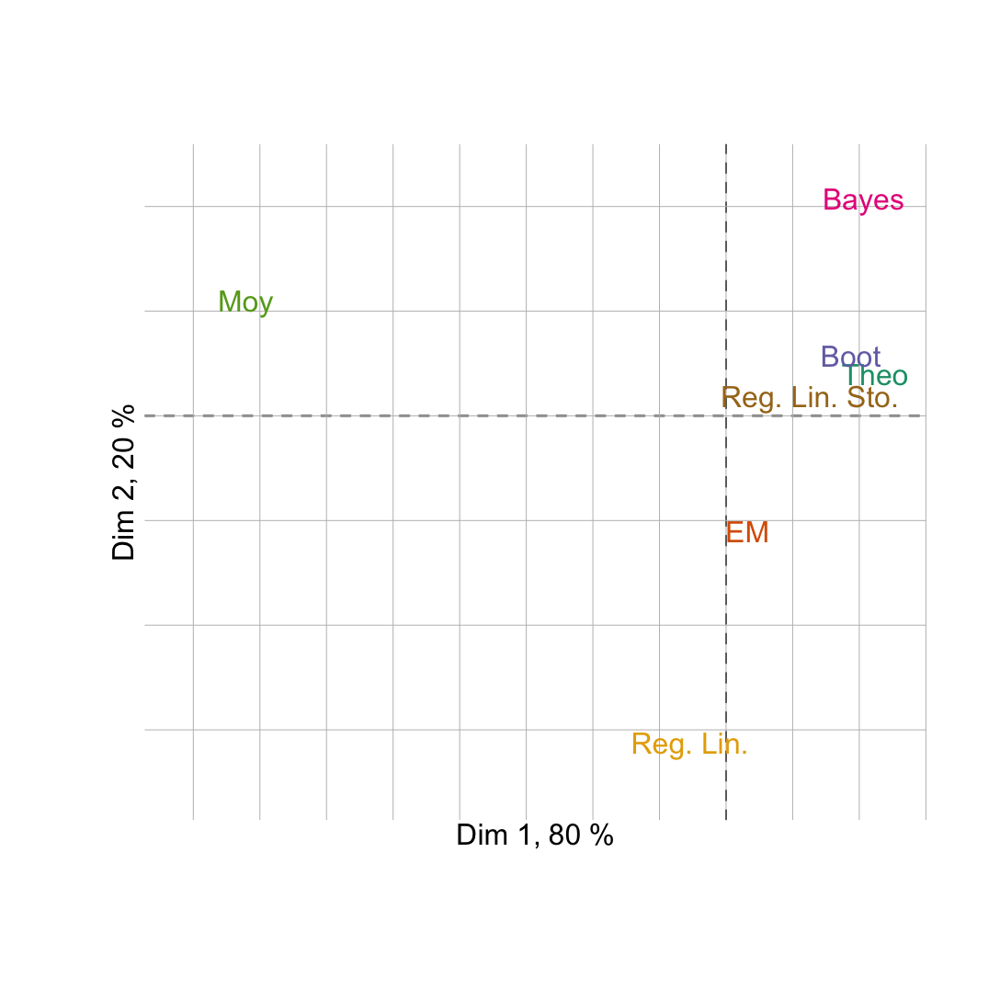Une petite ACP ? Les variables
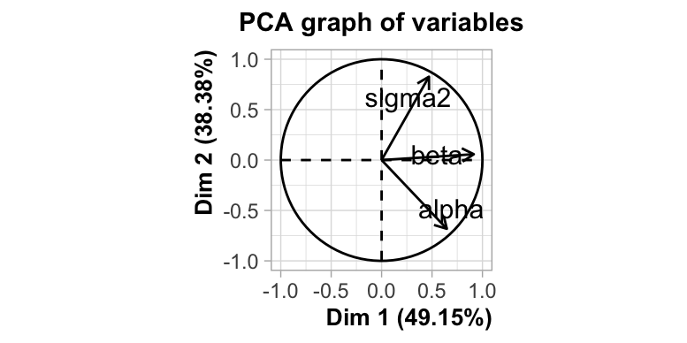… en relançant plusieurs fois… (1)
On trace les ellipses de confiance à 95%
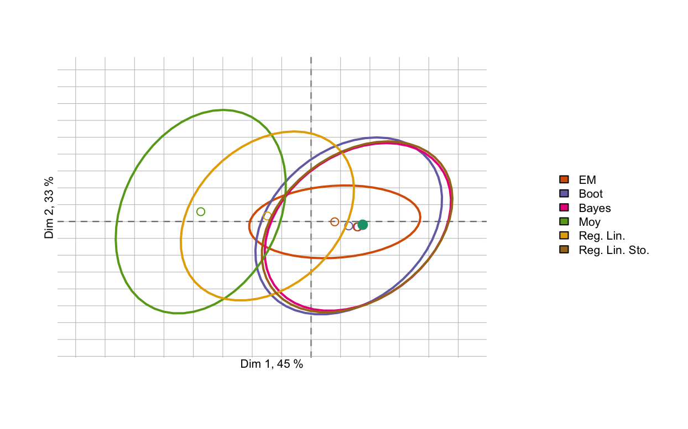… en relançant plusieurs fois… (2)
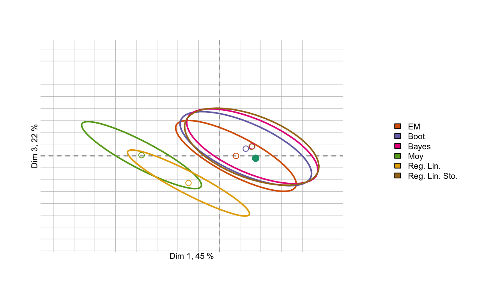Dans l’espace de base (1)
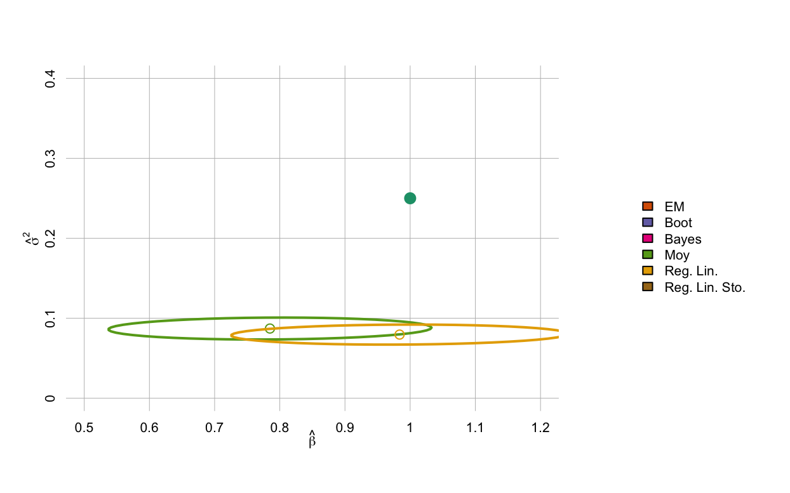Dans l’espace de base (2)
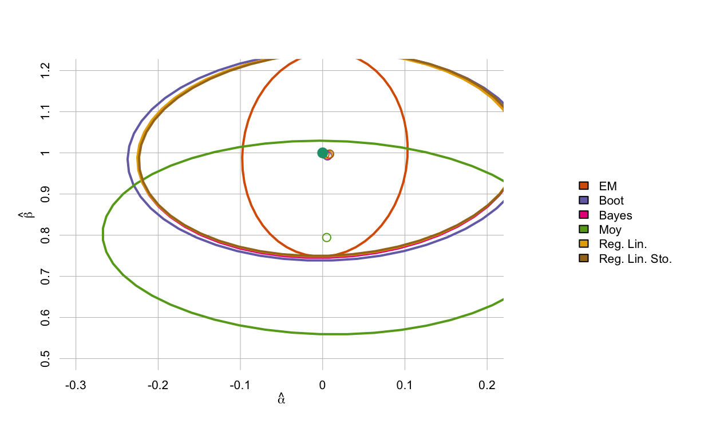Conclusion
- Construire un modèle statistique et le raffiner tant que possible
- Ne pas utiliser l’imputation à la moyenne, ni même la régression linéaire non stochastique, pour réaliser de l’inférence sur des paramètres
En pratique
Un passage à l’échelle nécessaire
Nous avons vu les principales caractéristiques de l’imputation par comparaison à la régression classique.
En pratique, les jeux de données ne sont pas bivariés et les NA ne sont pas que dans une seule variable…
Dommage…
Des modifications de ce que nous venons de voir ont été imaginées afin de gérer la présence de NA dans le cas général.
missMDA
- Utilisation de méthodes factorielles.
- Variables qualitatives/quantitatives/mixtes.
- Imputation simple/multiple.
- Echantillonnage bootstrap/bayésienne.
- Beaucoup de choses à dire…
Amelia II (algorithme EMB), Honaker and King (2010)
- Hypothèse d’un jeu de donnée complété qui suit une distribution normale multivariée (\(p\) variables) de paramètre \((\mu,\Sigma)\).
- Bootstrap ou bayésienne
Echantillonnage bootstrap et imputation via algorithme EM… EMB(ootstrap).
mice
Modèles conditionnels chaînés.
Utilise une pénalisation Ridge dans l’imputation, paramètre \(\kappa\) de l’ordre de \(\kappa=0.0001\) (\(\kappa=0.1\) est grand dans ce cas et “may introduce a systematic bias toward the null, and should thus be avoided”)
4 modèles d’imputation :
norm.predict: imputation sans alea,norm.nob: imputation stochastique,norm: imputation stochastique et postérieure/bayésienne,norm.boot: Estimtation des paramètres sut un échantillon bootstrap des données observées.
mice (2)
Les variables sont organisées par nombre d’obs. NA croissant. Un modèle sur la première variable conditionellement aux autres est construit. Les données manquantes sont imputées grâce à ce modèle. C’est au tour de la variable suivante etc… On recommence jusqu’à convergence.
Voir Vignette1.
missForest
- Utilisation de “random forests”
- Variables qualitatives/quantitatives/mixtes.
- Imputation simple.
Les variables sont organisées par nombre d’obs. NA croissant. Un modèle sur la première variable conditionellement aux autres est construit, sur les observations présentes pour cette variable. Les données manquantes sont imputées grâce à ce modèle. C’est au tour de la variable suivante etc… On recommence jusqu’à convergence.
k-NN, Troyanskaya et al. (2001)
- Non-itérative.
- Imputation simple. Pour une observation avec des NA, utilise les observations La fonction
impute.knndu packageimpute. Le paramètre le plus important estk, le nombre de plus proches voisins. - Package
impute: kNN réalisé sur les variables et non les observations. Données quantitatives. Distance euclidienne. - Package
VIM. Données mixtes. Distance de Gower.
Imputation en grande dimension
L’imputation en grande dimension a tendance à ne faire ressortir que les premières dimensions du jeu de donnée (nombre de composantes en ACP).
Or en grande dimension, les dimensions associées avec la réponse ne sont pas forcemment dans les premières dimensions du jeu de données.
Exemple : Ebola et données génétiques, dataset rVSV_ZEBOV Rechtien et al. (2017).
Il convient d’imputer en prenant en compte l’information que l’on souhaite retrouver (y). C’était l’objet de ma thèse et de la méthode Koh-Lanta, voir LORENZO, SARACCO, and THIÉBAUT (2019).
Conclusion
Conclusion
C’est un sujet difficile et/car computationnel, lire :
- Imbert and Vialaneix (2018), une biblio très fournie méthodo et implémentations.
- Imputation multiple & analyse factorielle, François Husson1.
- Utilisation d’Amelia II et imputation multiple2
Références